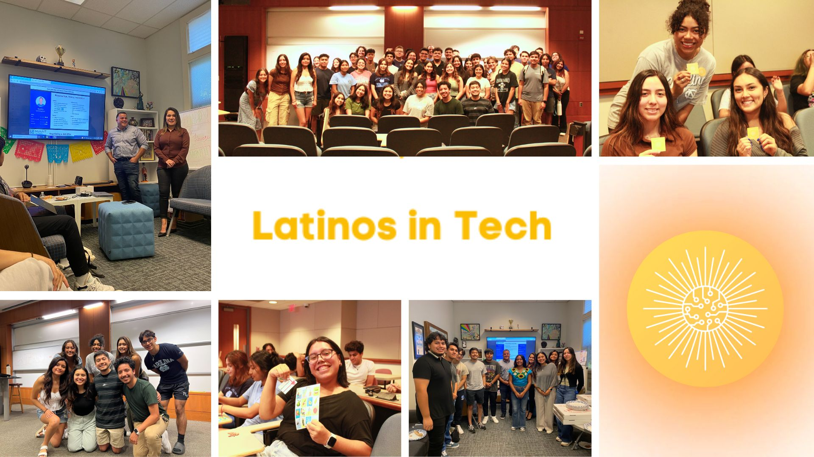

Leadership
UNC Latinos in Tech
Latinos in Tech has the mission of increasing representation and providing support for UNC Hispanic/Latinx students in technology fields, achieved through the provision of resources, hosting professional development events, and fostering a sense of community. As a founding member and taking up the role of Communications Chair on UNC Latinos in Tech's first executive board, I've played a pivotal role in shaping the organization from the ground up. As a Latina passionate about technology, I wanted to be part of a community that fosters belonging for individuals with similar backgrounds. In my role, I've made significant strides, from designing engaging graphics to managing our social media presence. We've seen impressive growth, gaining almost 200 new Instagram followers in our first four months alone. What's even more rewarding is the significant turnout at our events. We've connected with over 1,000 individuals on Instagram in the past month, reinforcing our mission to empower and support underrepresented voices in the tech world. Witnessing this level of participation and the connections forming within our community has been incredibly fulfilling. I'm excited to continue this journey, working collaboratively to make a lasting impact.
